Claude AI 6 Levels 阶梯图
从「对话」到「替你干活」· 1 小时讲完 Claude 完整能力地图
如果你用过 ChatGPT 或 Claude 但只停留在「跟它聊天」，这 6 Levels 就是你的下一站。Matt 用 1 小时把 Claude 的完整能力地图拆成 6 级阶梯——从最基础的「跟它说话」一路爬到「它替你干活」。每一级都讲清为什么上、怎么上、卡在哪。本文按原视频章节顺序逐级展开，附 17 张原文截图和一张自检表，读完你就能定位自己当前在哪一级、下一级该试什么。
METICS MEDIA · @METICSMEDIA · 2026/08/10
很多人用过 Claude，但只停留在 Level 1——把它当聊天框，问一个问题收一个答案。这就像你买了一辆跑车却只用它在小区里代步。Matt 把这种"用得太浅"叫做 Many people stop here and they're missing everything that's coming。
这 6 Levels 不是一个产品功能列表，而是一张能力地图。每一级都是一次认知跃迁：从"我得跟它说话"到"它能读我的文件"、从"它能造东西"到"它认识我"、从"它能接我的应用"到最后"它能替我干活"。读完你至少知道自己在哪一级、下一级长什么样。
"Many people stop here and they're missing everything that's coming."
—— 多数人停在这里，错过了接下来的一切
— MATT / METICS MEDIA
Talk to Claude
Claude 是 Anthropic 出的 AI 助手。如果你用过 ChatGPT，基本套路一样：输入自然语言，它回答、写东西、造东西。但 Claude 的口碑建立在三件事上：写得像人、文件处理强、为真实工作设计而不仅是快问快答。
Level 1 是入门门槛——但 Matt 说得很直接："很多人停在这里，错过了接下来的一切"。这一级的核心是学会写好 prompt、选对模型，剩下的能力都被浪费了。
Matt 用蜡烛店的例子做对比——同样问"写一个产品描述"，弱 prompt 给出一段泛泛的文字，强 prompt（包含店铺定位、蜡烛卖点、目标客户、文文要求）则写出"Autumn cabin. Picture this: Wool socks, a crackling fire..."这样有画面感的文案。Claude 没变，变的只是你给它的输入。
另一个关键习惯：别重开会话去改。Claude 记得整个对话，直接回"great, but make it half as long and keep the mention that it's hand poured"，它就在原答案上改。把每次回复当成"再改一稿"。
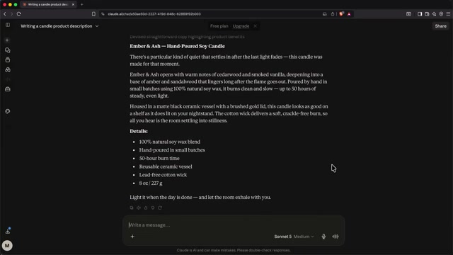
原文配图 · 强弱 prompt 对比 · 同一 Claude 不同答案 · 04:30
模型选择 · 你不需要懂技术，只要懂一件事
原视频录制时，Sonnet 是默认日常模型，Haiku 是轻量快速版，Opus 是进阶，Fable 是顶级。规则很简单：日常用默认；任务大或结果重要时升档；批量小问答时降档省用量。模型旁边的 effort 档位 控制 Claude 思考多久——多步骤且要求细节对的任务调高，其他保持默认。
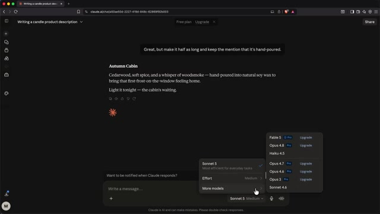
原文配图 · 模型选择下拉 · 默认 + 进阶 + 轻量 三档 · 07:30
关于用量限制：每个套餐（免费和付费）都有按周期补充的额度，用完了不会丢数据，只是等重置或升级。Matt 的建议很实在——"开始用免费版，等到额度开始烦你的那天再升级"。
Give Claude Your World
Level 1 时 Claude 只能看你输入框里的字。Level 2 开始，你能把手里的文件、看到的图片、当下的实时信息全喂给它——它从"聊天框"升级成"真助手"。
文件 & 图片上传
PDF、Word、Excel、图片，Claude 全能读。Matt 上传了一份蜡烛原料供应商的价格表 PDF，问"哪一档最便宜"，几秒后 Claude 找出 Golden Soy 464 bulk 是单价最低的选项。同样它能看产品照片——给一张蜡烛图，问"怎么改能让它在网上更好卖"，它会说"背景太抢镜、像是随手拍而不是产品图"。
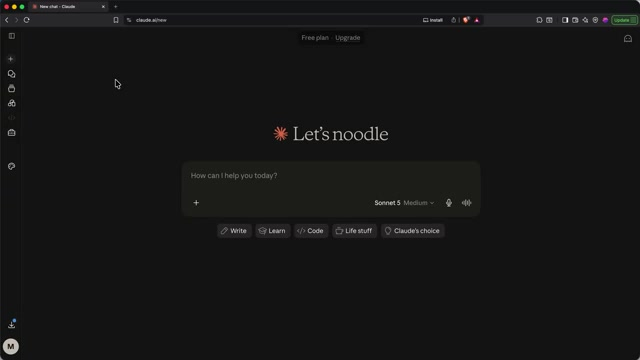
原文配图 · PDF 文件上传 + Claude 分析结果 · 10:30
Web Search · 带来源的实时搜索
Claude 默认不看实时信息。需要当前新闻、价格、趋势时，开 Web Search。它会搜网页然后回答，关键是会附上 来源链接。Matt 的忠告："事实要紧的时候，永远看来源。"
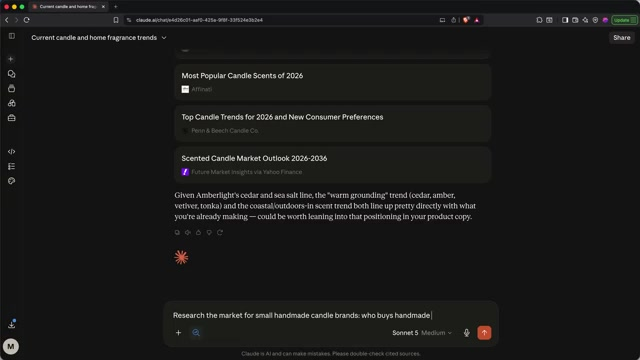
原文配图 · Web Search 结果 · 带 sources 引用 · 14:00
Deep Research · 几分钟读完上百个来源
付费功能，但 Matt 说是"让他觉得升级值回票价的两个功能之一"。点开 Research，Claude 会自主阅读几十甚至上百个来源，然后返回一份带完整引用的研究报告。Matt 让它研究"小型手工蜡烛品牌市场"——几分钟后就得到一份包括目标客户画像、价格区间、营销方式、新手三大坑的完整报告，所有数据点都带来源链接。
原文配图 · Deep Research 报告 · 带完整 sources · 15:30
这个功能特别适合人生大决策——搬家、跳槽、大额采购——AI 替你做完信息搜集，你只需要判断结论。
Make Real Things
Level 3 是认知跃迁——Claude 不再只是"在对话框里写文字"，它开始交付可用的实物。Matt 把这些产物分成两类：
A. 可下载文件 · Word / Excel / PPT / PDF
让 Claude "create an Excel spreadsheet to track inventory"——它会生成一份带真实公式的电子表格，可以下载、用 Excel 打开、编辑。同样的能力适用 Word 简历、PPT 演示、PDF 报告。Matt 的蜡烛店 demo 里，它建了一张 8 个蜡烛的库存表，包含品名、香型、成本、售价、利润率（自动算）、库存数。
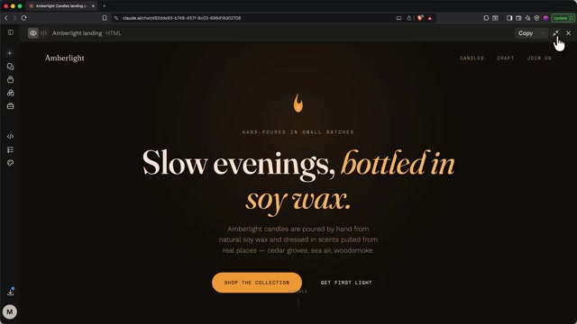
原文配图 · Claude 生成的 Excel 库存表 · 带公式 · 18:30
B. 互动构建 · HTML 页面 / 小工具
如果让 Claude "build something visual"，它会在聊天旁边开一个窗口实时构建。Matt 让它做一个蜡烛店落地页——几分钟后它做出一份配色温暖、有蜡烛闪烁动画的 HTML 页面。再让它改成米色背景、再加一个 scent quiz——它直接在原页面上迭代，每次打开预览都是最新版。
scent quiz 是个亮点：让用户选蜡烛燃烧的场景（厨房/卧室）、最先吸引的香味（木烟/柑橘）、氛围（夜归/下午茶），最后推荐一款蜡烛。这种"小而完整的互动产品"在 Claude 里几分钟就能做出来。
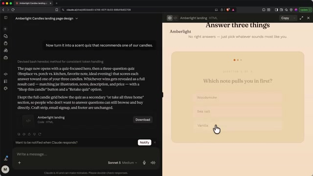
原文配图 · Claude 实时构建的 scent quiz 互动页面 · 19:30
对你来说，这可能是预算计算器、健身计划生成器、给朋友做的测试题。Claude 在这里像"坐在你旁边的设计师"——你说话，它做，你不满意它改。
Make Claude Know You
Level 3 暴露了一个问题：你的描述、研究、文件全散在不同的对话里，每个新对话 Claude 都从零开始。Level 4 解决这件事——Claude 开始越用越懂你。
Projects · 工作区 + 共享知识
Project 是一个把相关对话组织起来的工作区。两个超能力：一是 knowledge——你上传到 Project 的文件对所有对话可用，不用每次重新上传；二是 instructions——你描述一次"我做什么"，所有对话自动知道。Matt 给蜡烛店建了个 Project，上传价格表 + 研究报告 + 写下品牌调性，然后在新对话里只输入"写三封 newsletter 主题"——Claude 直接基于 Project 上下文开始工作，prompt 里几乎什么都没说。
Matt 称这是"从随手用 Claude 升级到真正和 Claude 协作的最大一步"。
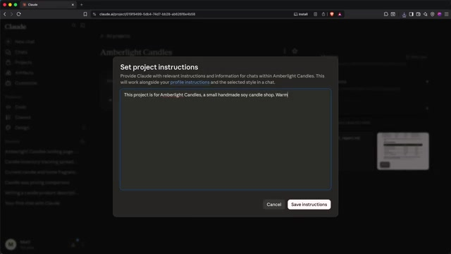
原文配图 · Projects knowledge + instructions 界面 · 21:30
Personal Instructions & Memory
Settings 里可以设个人 instructions（你的名字、称呼、工作类型、对 Claude 的特别要求）——对所有对话生效。Memory 则反过来：Claude 自动从对话里发现和记住关于你的事，用得越多越懂你。你随时可以查看、编辑、删除这些记忆。
不想被记住的对话？开 Incognito Chat（聊天框右上角幽灵图标）——这个对话不被保存、不进 Memory、不用于训练。问"who am I"，Claude 答不知道。
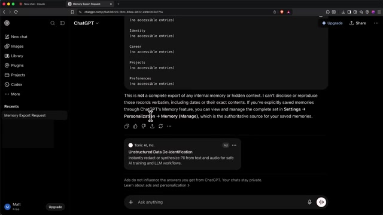
原文配图 · Memory 设置 · 自动记忆 + 手动编辑 · 24:30
从 ChatGPT 平迁 · Memory Import
从 ChatGPT 转过来的？Claude 提供导入路径——Settings → Memory → Import memory from other AI providers，按提示在 ChatGPT 里复制粘贴你的记忆，Claude 会整合进来。这是 experimental 功能，可能有少量偏差，事后可以手动编辑。
Mobile + Desktop App
iPhone / Android 移动端和 Mac / Windows 桌面端同步所有内容——账号、对话、Projects、Memory。移动端的最佳用法是"捕获 + 继续"：拍眼前的物体、走路时冒出的想法，回到电脑前整段对话已在那等。Level 5 和 Level 6 的能力在桌面端最完整。
Connect Your Apps
Level 5 是分水岭。之前 Claude 只能"谈你的世界"，从这一级开始它能伸进你的世界动手。你的真实数据存在日历、邮件、笔记、业务系统里，Connectors 让 Claude 安全地接入这些工具——你选连接哪些，随时能断开。
Connectors · 开箱即用
Gmail、Google Drive、Slack、Calendar 等常用工具 Claude 都内置了连接器。Matt 连接 Google Calendar 后，让 Claude "看下周哪天哪个下午最空，最适合深度工作"——几秒后它直接给出周三下午的建议，不用复制粘贴，不用截图。
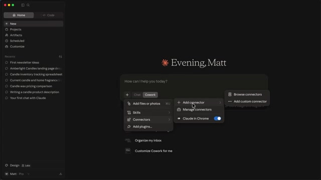
原文配图 · Connectors 列表 + Calendar 实际查询结果 · 29:30
自定义 MCP · 接你的业务系统
内置连接器不够用？可以用 MCP（Model Context Protocol） 接任何支持它的服务。Matt 用 Omnisend（邮件营销平台）演示：
新建蜡烛店，需要第一封欢迎邮件。Matt 在 Claude 里加 Omnisend 连接器，告诉 Claude 业务信息和邮件要求——"创建欢迎邮件草稿，介绍店铺和 Autumn Cabin 蜡烛，给 10% 首单折扣，包含品牌故事"。Claude 直接在你的 Omnisend 账户里建好草稿：主题行、预览文字、正文、按钮、首单优惠码全有。Matt 没写过一行文案，没碰过 campaign builder。
最妙的是——Claude 写到一半发现自己输出有字符问题，立刻诊断、重写、给出干净版本。它会检查自己的工作再交付。
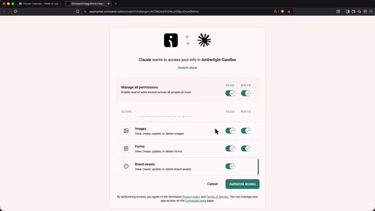
原文配图 · Omnisend MCP 连接 + 生成的欢迎邮件草稿 · 34:00
Skills · 安装一次永久生效
Skill 像给 Claude 装的一个"食谱"——安装一次后，Claude 知道怎么按特定标准完成这类任务。Matt 装了 Theme Factory skill 做演示：这个 skill 给 Claude 10 套主题风格，以后做 PPT 时输入 /theme factory 调用，Claude 自动按选定主题风格排版幻灯片。Skills 库里还有文档类、品牌类、规划类等可以慢慢探索。
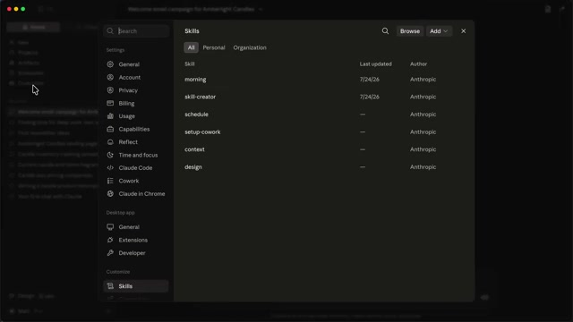
原文配图 · Theme Factory skill 主题选项 · 37:30
Claude Works Without You
之前所有级别都是对话——你问，Claude 答，你全程在场。Level 6 不一样：你交给 Claude 一个真实任务，它自己去跑。这是 Matt 说的"升级值回票价的第二个功能"。
Cowork · 桌面端自主 Agent
把消息框从 Chat 切到 Cowork，Claude 获得自主操作你指定文件夹的能力（其他位置它碰不到）。Matt 给它一个收据文件夹，让它"读取每张收据的日期、供应商、金额，做成一份干净的支出表"——它自己开文件、自己读、自己建表，整个过程 Matt 没在电脑前。
权限分三档：Manual（每步问一次）→ Auto approve（自动通过安全检查）→ Skip all（不问直接做）。第一次用建议从 Manual 开始，建立信任后再松绑。模型选 Opus，effort 调高——既然让它干活，就别省脑子。
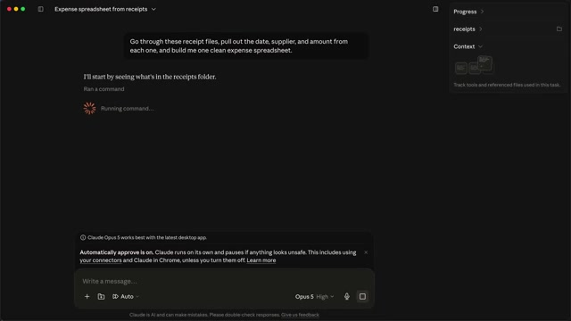
原文配图 · Cowork 自主处理 receipts 进度 · 42:00
Scheduled Tasks · 定时任务
Cowork 里还有个 Scheduled 区。你描述一次任务 + 设频率，Claude 按计划自动跑。Matt 建了个任务："搜索蜡烛和家居香氛的最新趋势，写一份短报告"，每周一早上 6:30 自动跑。他还没起床，报告已经在那里等他。
任务可以在云端跑，电脑关着也工作。常见场景：每周行业新闻摘要、基于日历的提醒清单、每月预算检查。
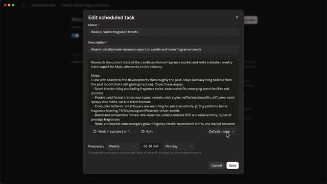
原文配图 · Scheduled tasks 配置界面 · 46:00
Claude Design → Claude Code · 真正造东西
Matt 说有 6 Levels，但这不是终点——阶梯顶端是 Claude Code。它不只是编程工具（虽然听起来像），它和 Cowork 用同一引擎，但产出物是真实工作的代码、命令、可运行的软件。你还是用日常语言跟它对话。
Matt 用两件工具做完整 demo：先在 Claude Design 里输入描述，自动生成蜡烛店的完整网站设计稿（首页、商店页、关于页、含 scent quiz）；再"发送到 Claude Code"，后者把设计稿真正建成可运行的网站——20 分钟，照片也自动换了，Omnisend 也连上了，加邮箱就自动进邮件列表。
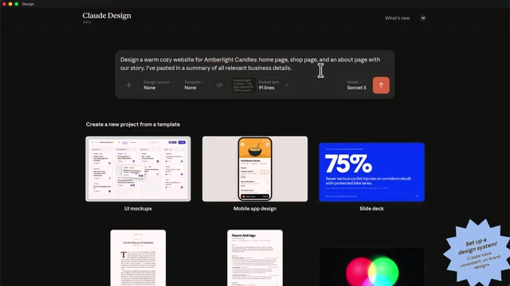
原文配图 · Claude Design 生成的蜡烛店网站设计 · 48:30
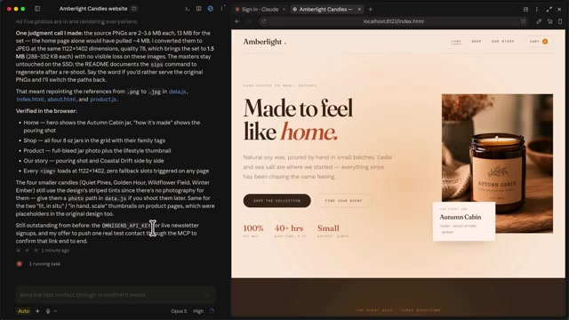
原文配图 · Claude Code 实际建站成果 · 56:30
最后的杀手锏：Matt 让 Claude Code 写了个桌面工具——读 inventory.xlsx，按品牌风格生成可打印的 PDF 蜡烛标签。这个工具生成后不再依赖 Claude——双击就运行，新加产品、重命名都自动反映。Matt 说："Claude stops being the worker and starts building the machines."
Level 6 不是终点。同一能力还可以指向电脑本身——查为什么电脑慢、每晚备份照片。还能并行跑多个 Claude session 同时做项目的不同部分。Matt 最后一句："If you can do level one, you can grow into level six. The only difference is how big the results get."
Where Are You on the Ladder?
读完前面 6 Levels，花两分钟自检——把每一行对应的"关键标志"对照你当前的实际使用，打勾的是你已经稳的，空着的是你还没到位的。
| 级别 | 这一级在做什么 | 关键标志（你能做这个？） | ✓ |
|---|---|---|---|
| L1 | 跟 Claude 说话 + 三段式 prompt | 我能写出 context + task + format 的 prompt；知道什么时候切模型 | ☐ |
| L2 | 把文件 / 图片 / 实时信息交给 Claude | 我能上传 PDF / 图片分析；会用 Web Search 和 Deep Research | ☐ |
| L3 | 让 Claude 造真东西 | 我能用 Claude 生成 Excel / Word / PPT；能迭代互动 artifact | ☐ |
| L4 | 让 Claude 认识你 | 我用过 Project + Instructions；Memory 在工作；手机电脑同步 | ☐ |
| L5 | 接上你已有的工具 | 我连过至少一个 Connector 或自定义 MCP；用过至少一个 Skill | ☐ |
| L6 | Claude 替你干活 | 我用过 Cowork 处理过文件夹；建过至少一个 Scheduled task | ☐ |
找到第一个空着的格了吗？那就是你的下一站。别想一次性爬完——Matt 的建议是：这周专注把下一级的核心功能用上一次，用顺了再上下一级。L1 到 L6 不该是台阶，是电梯。
SOURCES & CREDITS
引用与原文出处
-
ORIGINAL VIDEO
The Ultimate Beginner's Guide to Claude AI
作者：Matt / Metics Media (@MeticsMedia) · 682K 订阅 · 发布于 2026/08/10 · 36 万浏览 · 1.0 万赞
视频链接：https://youtu.be/9oJySubZRSA - CHANNEL · YOUTUBE https://www.youtube.com/@MeticsMedia — 英文 AI 教程频道，覆盖 ChatGPT / Claude / Gemini / Cursor / Vibe Coding
-
TIMESTAMPS · 章节时间戳
00:00 Intro · 00:57 L1 Talk · 09:38 L2 Files · 16:39 L3 Make · 20:16 L4 Know · 28:54 L5 Connect · 39:47 L6 Without You
点击跳转原视频，可按时间戳跳读 -
SPONSOR · OMNISEND
视频赞助商是 Omnisend（邮件营销平台）。本文解读未涉及商业合作，Omnisend 在 L5 的演示中作为 MCP 连接 demo 使用
https://www.omnisend.com - INTERPRETATION 本文为中文解读版，按中文阅读习惯重排。原视频所有章节顺序、关键能力定义、原话金句均保留原貌；中文为意译，便于理解。如需引用请以原视频为准。
6 Levels 不是"功能菜单"——它是一张"你已经走到哪、还能走到哪"的能力地图。读完后建议按自检表选你的下一级，专注一周把它的核心功能用上一次。用顺了再上下一级——L1 到 L6 不该是台阶，是电梯。
"If you can do level one, you can grow into level six.
The only difference is how big the results get."
—— 只要你会 L1，就能长到 L6。区别只是结果有多大。
— MATT / METICS MEDIA